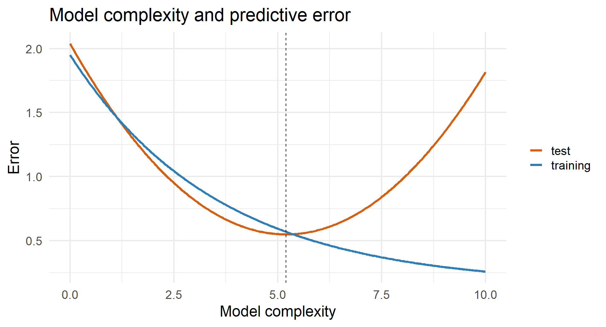
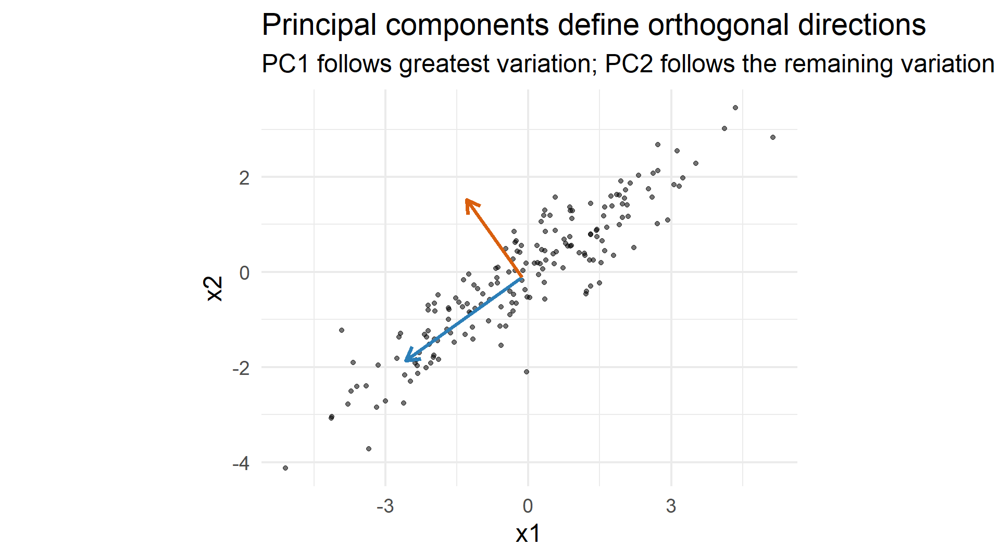
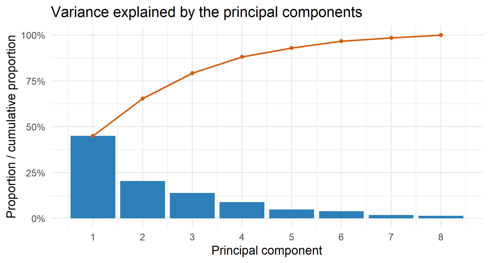
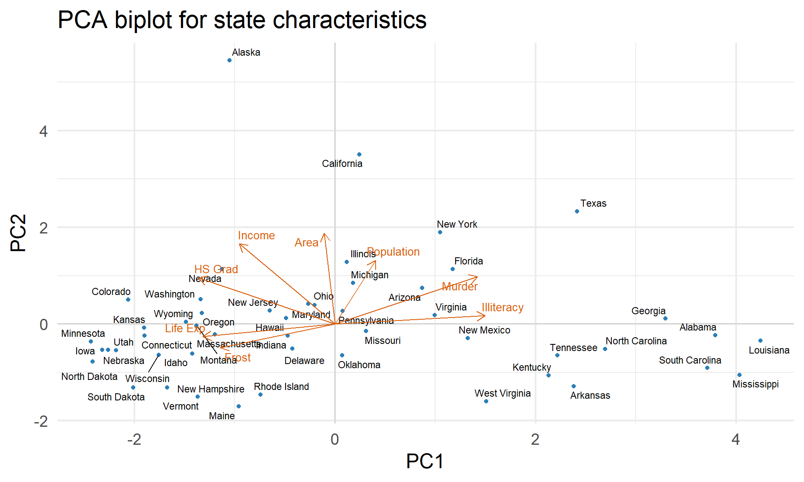
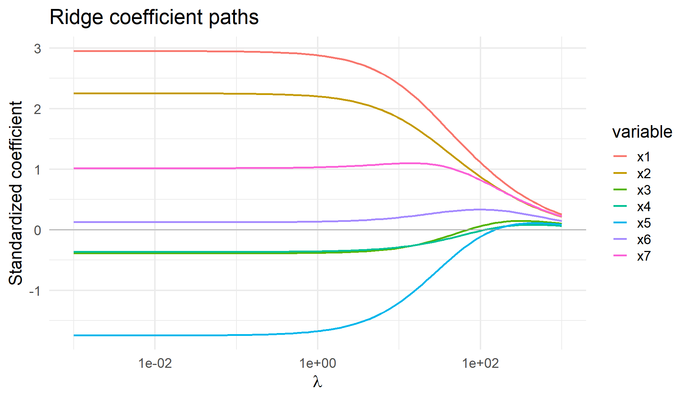
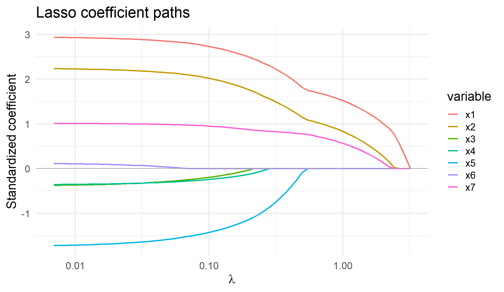
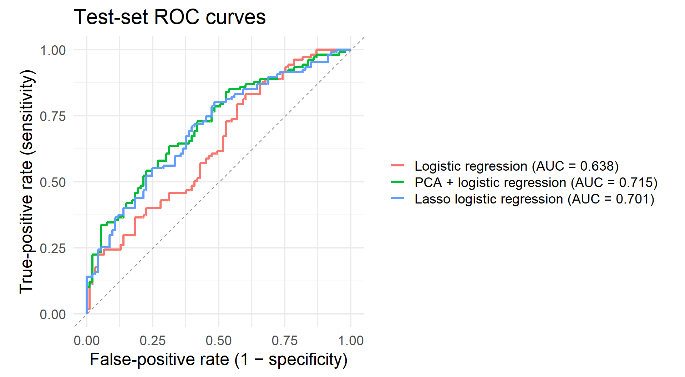

Code
flowchart LR A["Many correlated predictors"] --> B["Principal components"] A --> C["Penalized regression"] B --> D["Use a small number of components"] C --> E["Shrink coefficients toward zero"]
Dimensionality Reduction and Regularization
This lecture studies how model complexity affects prediction and interpretation.
By the end, you should be able to:
Suppose a model has many predictors or highly flexible functions.
The goal is not to minimize training error at any cost. The goal is to minimize error on new observations.
Important
Complexity control deliberately restricts a model so that it generalizes more reliably.

Training error typically falls with complexity. Test error often follows a U-shaped curve.
The best predictive model usually lies between these extremes.
flowchart LR A["Many correlated predictors"] --> B["Principal components"] A --> C["Penalized regression"] B --> D["Use a small number of components"] C --> E["Shrink coefficients toward zero"]
PCA creates new variables called principal components. Each component is a weighted combination of the original variables.
PC1 follows the direction with the greatest variation.
PC2 captures the greatest remaining variation while being perpendicular to PC1.
Later components continue this process.
Loadings describe how the original variables contribute to a component.
Scores describe where each observation lies along that component.

Without standardization, PCA favors variables with large numerical variance.
Standardized PCA uses
\[ z_{ij}=\frac{x_{ij}-\bar x_j}{s_j}, \]
R’s state.x77 dataset contains eight measurements for the 50 U.S. states.
Rows: 50
Columns: 9
$ state <chr> "Alabama", "Alaska", "Arizona", "Arkansas", "California", "…
$ Population <dbl> 3615, 365, 2212, 2110, 21198, 2541, 3100, 579, 8277, 4931, …
$ Income <dbl> 3624, 6315, 4530, 3378, 5114, 4884, 5348, 4809, 4815, 4091,…
$ Illiteracy <dbl> 2.1, 1.5, 1.8, 1.9, 1.1, 0.7, 1.1, 0.9, 1.3, 2.0, 1.9, 0.6,…
$ `Life Exp` <dbl> 69.05, 69.31, 70.55, 70.66, 71.71, 72.06, 72.48, 70.06, 70.…
$ Murder <dbl> 15.1, 11.3, 7.8, 10.1, 10.3, 6.8, 3.1, 6.2, 10.7, 13.9, 6.2…
$ `HS Grad` <dbl> 41.3, 66.7, 58.1, 39.9, 62.6, 63.9, 56.0, 54.6, 52.6, 40.6,…
$ Frost <dbl> 20, 152, 15, 65, 20, 166, 139, 103, 11, 60, 0, 126, 127, 12…
$ Area <dbl> 50708, 566432, 113417, 51945, 156361, 103766, 4862, 1982, 5… PC1 PC2 PC3 PC4 PC5
Standard deviation 1.897076 1.277466 1.054486 0.8411327 0.6201949
Proportion of Variance 0.449860 0.203990 0.138990 0.0884400 0.0480800
Cumulative Proportion 0.449860 0.653850 0.792840 0.8812800 0.9293600The component signs are arbitrary: reversing every sign in one loading vector gives the same axis.

A scree plot supports judgment; it does not supply a universally correct cutoff.

Principal component regression (PCR) uses a selected number of component scores as predictors instead of using all the original variables directly.
The number \(q\) controls complexity:
Choose \(q\) by cross-validation when prediction is the goal.
Note
PCA preserves variation in the predictors, not necessarily the variation most useful for predicting the outcome. Cross-validation is therefore preferable to choosing \(q\) from the scree plot alone.
Ordinary least squares chooses coefficients that fit the training outcomes as closely as possible. When predictors are numerous or highly correlated, those coefficients can become large and unstable.
Regularization still rewards good fit, but it also discourages large coefficients. This restriction can improve prediction on new data.
The tuning parameter \(\lambda\) controls the strength of regularization:
We choose \(\lambda\) using cross-validation rather than training error.
Ridge regression minimizes
\[ \operatorname{RSS}(\beta)+\lambda\sum_{j=1}^{p}\beta_j^2. \]
The squared-coefficient penalty shrinks every coefficient smoothly toward zero.
Predictors are usually standardized first so the penalty treats variables measured in different units fairly.

Coefficients shrink smoothly toward zero but are not exactly zero.
The lasso minimizes
\[ \operatorname{RSS}(\beta)+\lambda\sum_{j=1}^{p}|\beta_j|. \]
Unlike ridge, lasso can set some coefficient estimates exactly to zero.
This combines:
As \(\lambda\) increases, smaller coefficients may reach zero and leave the model. This can create a simpler equation.

As \(\lambda\) increases, lasso coefficients reach exactly zero at different points. This produces a sequence of increasingly sparse models.
The value of \(\lambda\) is a tuning parameter, not something estimated by minimizing training RSS.
Use \(K\)-fold cross-validation:
flowchart LR A["Training data"] --> B["Cross-validation folds"] B --> C["Select λ or q"] C --> D["Refit on all training data"] D --> E["Evaluate once on test data"]
Warning
If the test set is repeatedly used to choose \(q\), \(\lambda\), transformations, or predictors, it becomes part of the training process and no longer provides an honest final evaluation.
We simulate a binary outcome with a deliberately challenging predictor set:
set.seed(2)
n <- 400
z1 <- rnorm(n)
z2 <- rnorm(n)
# Ten noisy measurements of each underlying signal
signal_1 <- sapply(1:10, function(j) z1 + rnorm(n, sd = 0.7))
signal_2 <- sapply(1:10, function(j) z2 + rnorm(n, sd = 0.7))
noise <- matrix(rnorm(n * 40), nrow = n)
x <- cbind(signal_1, signal_2, noise)
colnames(x) <- paste0("x", 1:60)
probability <- plogis(0.7*z1 - 0.7*z2)
y <- factor(rbinom(n, 1, probability), levels = c(0, 1))
train_id <- sample(seq_len(n), 200)
x_train_raw <- x[train_id, ]
x_test_raw <- x[-train_id, ]
y_train <- y[train_id]
y_test <- y[-train_id]The same 200 training and 200 test observations are used for all three models.
We compare:
Standardization and PCA are learned from the training set only and then applied to the test set.
train_mean <- colMeans(x_train_raw)
train_sd <- apply(x_train_raw, 2, sd)
x_train <- scale(x_train_raw, center = train_mean, scale = train_sd)
x_test <- scale(x_test_raw, center = train_mean, scale = train_sd)
pca_fit <- prcomp(x_train, center = FALSE, scale. = FALSE)
variance_explained <- pca_fit$sdev^2 / sum(pca_fit$sdev^2)
cumsum(variance_explained)[1:5][1] 0.1281996 0.2467434 0.2812183 0.3118998 0.3412629# Ordinary logistic regression
logit_data <- data.frame(y = y_train, x_train)
logit_fit <- glm(y ~ ., data = logit_data, family = binomial)
# Logistic regression using the first two principal components
pc_train <- as.data.frame(pca_fit$x[, 1:2, drop = FALSE])
pc_test <- as.data.frame(
predict(pca_fit, newdata = x_test)[, 1:2, drop = FALSE]
)
pc_train$y <- y_train
pca_logit_fit <- glm(y ~ ., data = pc_train, family = binomial)
# Lasso logistic regression; lambda is chosen by cross-validation
set.seed(2)
lasso_fit <- cv.glmnet(
x_train, y_train,
family = "binomial", alpha = 1,
type.measure = "auc", nfolds = 10
)prob_logit <- predict(
logit_fit,
newdata = data.frame(x_test), type = "response"
)
prob_pca <- predict(
pca_logit_fit,
newdata = pc_test, type = "response"
)
prob_lasso <- as.numeric(
predict(lasso_fit, newx = x_test,
s = "lambda.min", type = "response")
)
selected_lasso <- coef(lasso_fit, s = "lambda.min")After choosing a probability threshold, each prediction is classified as positive or negative. Comparing predictions with the true outcomes gives a confusion matrix.
| Actually positive | Actually negative | |
|---|---|---|
| Predicted positive | True positive (TP) | False positive (FP) |
| Predicted negative | False negative (FN) | True negative (TN) |
\[ \text{Sensitivity}=\frac{TP}{TP+FN} \]
\[ \text{Specificity}=\frac{TN}{TN+FP} \]
Changing the probability threshold changes the entries of the confusion matrix and therefore changes sensitivity and specificity.
A classifier first produces a score or probability. We then choose a threshold above which an observation is classified as positive.
Changing the threshold changes two quantities:
An ROC curve plots sensitivity against the false-positive rate across all possible thresholds.

# A tibble: 3 × 2
model test_auc
<chr> <dbl>
1 PCA + logistic regression 0.715
2 Lasso logistic regression 0.701
3 Logistic regression 0.638Small AUC differences on one test split should not be overinterpreted. Repeated resampling provides a more stable comparison.
Controlling Complexity • COSMOS